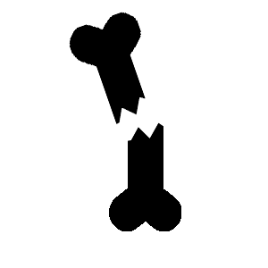

台灣民眾常見慢性病之自體分析
台灣民眾最常發生的慢性病
台灣男女性心血管疾病分佈
| 疾病 | 說明 | 男性比例 | 女性比例 |
|---|---|---|---|
| 中風 | 腦部缺血造成的腦細胞死亡 | 1.07% | 0.37% |
| 高血壓 | 動脈血壓升高的慢性病 | 17.12% | 10.04% |
| 高血脂症 | 涉及血液任何或所有脂類以及又或脂蛋白異常升高水平的情況 | 9.09% | 6.38% |
| 心律不整 | 心臟電傳導系統異常所引起的各種症狀 | 4.33% | 4.77% |
| 冠心症 | 一群包含穩定型心絞痛 | 2.27% | 0.68% |
| 瓣膜性心臟病 | 4個瓣膜個別或合併發生瓣膜狹窄、逆流或兩者合併的病變所造成的心臟疾病 | 2.48% | 4.83% |
| 氣喘 | 氣道慢性炎症疾病 | 3.3% | 3.43% |
| 肺氣腫或支氣管炎 | 肺部支氣管（中至大的大小之呼吸道）的發炎 | 1.46% | 1.05% |
| 痛風 | 週期性發作的刺激性關節炎 | 9.87% | 0.59% |
| 關節炎 | 關節的軟骨退化或者結締組織發炎 | 3.35% | 5.94% |
| 骨質疏鬆 | 是一種因骨質密度下降，而骨折風險提高的疾病 | 2.42% | 5.68% |
| 過敏 | 人體接觸環境中部分對一般人影響不大的過敏原因子後，所引發的一系列超敏反應現象 | 7.49% | 10.53% |
| 其他心臟病 | 1.4% | 0.96% | |
| 100.00 | 100.00 | ||
中風
疾病說明：
腦中風是一種由於大腦局部的血流障礙，因而產生局部的功能喪失，中風可分為缺血性腦中風、出血性腦中風。出血性中風又稱為腦出血，主要是由於腦血管破裂，產生血塊壓迫腦細胞及影響供血，出血性腦中風雖然在腦中風中佔了較少比率（35%），然而死亡率卻十分高（30%）。
如何預防出血性腦中風的發生？
控制血壓： 高血壓導致的血管壁破裂即為腦出血最主要的成因，因此有高血壓的病患都應按時服藥控制血壓。
良好生活習慣： 應盡量避免過大的壓力，飲食正常，避免肥胖，維持良好體態以及運動習慣。
得到出血性腦中風後，應該要怎樣保養呢？
出血性中風是非常嚴重的疾病，而腦出血的病患絕大多數是由高血壓引起的，因此血壓的控制格外重要，而術後的病患由於行動不便，照護者應協助病患維持呼吸道的通暢、抽痰，並做好腸胃道、泌尿道之照顧，防止褥瘡及深部靜脈栓塞之預防以及後續的復健，並注意氣溫，因為急遽的溫度轉換也會導致腦中風復發的可能。
高血壓
疾病說明：
高血壓是為一種動脈血壓升高的慢性疾病，正常人的血壓值應為收縮壓＜120毫米汞柱（mmHg），舒張壓則是＜80mmHg，而當進入高血壓前期時，患者的收縮壓為120～139mmHg，而舒張壓為80～90mmHg，而當收縮壓≧140mmHg且舒張壓≧90mmHg時，則病患為高血壓。
根據2017年11月由ACC（美國心臟病學會）、AHA（美國心臟學會）等多個學術機構，重新將高血壓進行新的定義和分類，建議重新分類為：正常血壓（收縮壓＜120 mmHg，舒張壓＜80 mmHg）、高血壓前期（收縮壓120－129 mmHg，且舒張壓＜80 mmHg），將高血壓下修至收縮壓≧120mmHg且舒張壓≧80mmHg，但目前國內還沒採用這項分類。
如何預防高血壓的發生？
1.減重：
減輕體重對降血壓有顯著效果，維持BMI在18.5～24範圍內，且研究顯示每減重十公斤，血壓會降5~20mmHg。
2.運動：
各種有氧運動對控制血壓都有幫助，規律的有氧運動效果極佳。
3.戒菸：
抽菸會增加血管中的壞膽固醇，造成動脈硬化，使血管收縮狹窄，增加罹患心血管疾病風險。
4.限制飲酒：
少量的酒精有降低血壓的功效，但超過建議量則會增加高血壓的風險，國衛院建議一天酒精量不要超過10公克，約為一瓶啤酒或是120cc的紅酒。
5.睡眠正常：
壓力大、長期失眠會導致血壓上升，因此正常的睡眠習慣可以維持血壓的穩定。
得到高血壓後，應該要怎樣保養呢？
高血壓的保養得從日常做起，病患必須謹遵醫師要求服藥，切勿自行停藥，家中有其他高血壓病患時也不能共用藥物，因為高血壓藥物是針對病患的身體狀況不同而給予，病患也應注意保暖，日常生活作息正常，飲食營養均衡，並定期量血壓，出現異常時即需就醫。
取材自康健知識庫---高血壓
高血脂症
疾病說明：
血脂，意指血液中的脂肪，主要包括膽固醇及三酸甘油酯，當血液中流通之膽固醇或三酸甘油酯之濃度高於正常值時，稱為高血脂症，膽固醇一般可粗分為三類，低密度膽固醇（LDL-C）是為壞膽固醇，高密度膽固醇（ HDL-C）是為好膽固醇，以及其他類膽固醇。
如何預防高血脂症的發生？
1.減肥：
減肥是降低血脂最有效的方式，由於高血脂成因為血液中脂肪過多，因此減肥以及減少高熱量食物的攝取是最基本的方式。
2.戒菸戒酒：
菸酒會使血液中脂肪濃度提高，且會影響代謝，戒菸戒酒能有效降低血液中的脂肪量。
得到高血脂症後，應該要怎樣保養呢？
血脂過高的病患，在飲食上可以做出改變，避免食用過多精緻甜食，水果的攝取也應適量，可多吃膳食纖維類的食物，選擇健康油脂，烹調時以少油為主，減少或禁止飲酒，避免過度緊張並養成運動習慣。
取材自康健知識庫---高血脂症
心律不整
疾病說明：
心律不整是因為心臟電力傳導功能異常所引起的各種症狀。正常情況下，心臟跳動是由右心房的竇房結控制，經由房室結、希氏徑把電流刺激由心房傳到心室，引起心臟的收縮，讓心臟可以維持正常搏動，維持穩定的血壓及供應身體所需的血液。心律不整則是以上這段傳導過程出現異常，可能會出現心跳過快（每分鐘大於100下）或是過慢（每分鐘少於60下）或者不規則跳動的情況，這些都統稱為心律不整。
如何預防心律不整的發生？
1.正常日常生活：
維持情緒穩定，避免壓力過大，遠離菸、酒，且注意飲食均衡，維持正常體態。
2.勿濫用藥：
不得濫用藥物以及毒品、或是興奮劑，某些強效的提神飲料也不建議太常飲用。
得到心律不整後，應該要怎樣保養呢？
心律不整並非重大的疾病，僅有少部分需要即刻治療或手術治療，患有心律不整的病患仍須從生活習慣著手，避免濫用藥物、提神劑及興奮劑等，維持適當運動，避免情緒突然間起伏，且在感覺到心跳異常時應盡速就醫。
取材自康健知識庫---心律不整
冠心症
疾病說明：
冠心症，又稱為狹心症。是因為冠狀動脈上阻塞所引發的疾病，成因在於血管變硬致使血液流通不良，進而發生心肌缺氧。冠心症可分成急性與慢性，慢性冠心症大多為心絞痛，而急性冠心症主要為心肌梗塞。
如何預防冠心症的發生？
1.慢性疾病控制：
有慢性疾病如高血壓、糖尿病等的病患需妥善控制病情，以降低罹患冠心病機率。
2.飲食控制和運動：
低脂飲食，且勤於運動可有助於減低血脂，降低血管阻塞的風險。
3.戒菸：
戒菸能減低動脈硬化風險，也能使血液較不黏稠，且吸菸也能避免其他大大小小的疾病。
冠心症的預防需要從生活做起，只有養成良好的生活習慣，且定時檢查，在需要治療時進行治療，才能有效讓疾病遠離。
得到冠心症後，應該要怎樣保養呢？
冠心症患者應隨身攜帶硝化甘油片，且對自身的身體狀況更需謹慎，倘若身體不適且口含硝化甘油片也無法緩解時就應該就醫，且病患需養成良好的生活習慣，有安裝心臟支架的患者也需配合醫師指示服藥，並定期回診追蹤病情。
取材自康健知識庫---冠心症
瓣膜性心臟病
疾病說明：
心臟的功能主要靠心肌收縮的動力和心瓣的開閉,來推動血液和將 血液導向適當的部分,如果心瓣的功能欠佳,例如因發炎而引致心瓣 黏結,心瓣開啟時空間便較正常為狹窄,血液的流通便會受到阻滯。如果心瓣因發炎而引致收縮的話,它在關閉的時候便不能全將空間 閉鎖,血液便會從空隙中流過,引致心臟的功能減弱。約6成由風濕性心臟病引起。其他原因如紅斑性狼瘡、先天性心臟病及退化性疾病或不明原因等。
得到瓣膜性心臟病後，應該要怎樣保養呢？
1.控制膽固醇
美國心臟協會依據近幾年的研究結果，更新降低心臟病發作的一些準則，其中一個重點是：心臟病人要好好控制膽固醇。尤其是壞膽固醇（LDL-C，低密度脂蛋白膽固醇）在100mg/dl以上的病人，特別要服用降膽固醇藥物。因為壞膽固醇會增加血管阻塞的風險。
另外，醫界近年也發現，服用statins這類藥物，不僅可降低膽固醇，且心臟病發後5年內再度復發或死亡的風險，最高也可減少三分之一。
2.多吃魚
吃富含Omega-3脂肪酸的魚肉，如鮭魚、鯷魚等深海魚，不僅有助於降低血中三酸甘油脂，還可防止血管阻塞。更有研究指出，對心臟病人而言，長期規律吃魚的好處，不亞於吃心臟病藥物。
3.多吃深綠色葉菜
大力水手「卜派」的最愛──菠菜，也可能是心臟病人的救星。
黃色素（Lutein），在深綠色葉菜與蛋黃中發現的一種金黃色素，過去已證實有助於改善因老化引起的視力退化，以至於失明的問題，現在醫學界更發現，每天吃半杯富含黃色素的食物，也可以減少動脈血管壁阻塞，避免心臟病發。
4.快走、慢跑、打高爾夫
心臟病人該做什麼樣的運動、運動量該如何？陳雲亮指出，心臟病人要衡量個人體力與身體狀況。他建議，每天可快走1小時，或是依照美國醫界建議，1週有4∼7天慢跑40分鐘∼1小時。如果有關節炎問題，可以游泳。
另外，一篇刊登在《運動醫學與科學》期刊的研究指出，高爾夫球可能是最適合心臟病人的運動。
德國吉森（Giessen）大學的學者，針對20個心臟病患做研究，發現這些病人打高爾夫球時，心臟跳動的速率和其他8個健康的受測者差不多，血壓同時也沒有特別升高，換句話說，心臟並沒有受到過度的壓力。
5.手術後，愈早運動愈好
不少人誤以為心臟病人在手術後絕不適合運動，應該好好躺在床上，但鎮日躺著，反而讓肌肉功能變差，阻礙復原的進度。
氣喘
疾病說明：
氣喘是指肺部空氣進出的管道（支氣管）出現慢性發炎產生的反應過度現象， 慢性發炎會使支氣管黏膜紅腫、分泌物增加，反應過度則是因為外界環境如冷空氣、過敏原、空氣污染、呼吸道感染等，造成支氣管壁的肌肉易收縮、阻塞，空氣流量減少，可能出現呼吸喘、胸悶等症狀，尤其是夜晚或是凌晨較易發作。
如何預防氣喘的發生？
氣喘的預防方式最基本的即是遠離過敏源，就能減少氣喘的發生，也要盡量避免會造成呼吸道或肺部傷害的環境，勿吸菸及二手菸，氣喘的預防方式最主要還是從生活做起，只要盡力去提防造成氣喘的原因則發作頻率就會降低。
得到氣喘後，應該要怎樣保養呢？
氣喘病患在生活環境的維護上需多加注意，應盡量避免過敏原，並重視清潔，對動物的毛屑過敏的患者應避免養寵物，勿吸菸及拒絕二手菸，並做適量運動，倘若某項運動會造成氣喘發作則應更換運動的類型，心情上應保持放鬆，避免過度的情緒起伏。
取材自康健知識庫---氣喘
肺氣腫或支氣管炎
疾病說明：
慢性支氣管炎的定義是持續兩年或以上，每年裡超過三個月的有痰咳嗽。大部分慢性支氣管炎患者有慢性阻塞性肺病。吸菸是最常見的致病原因，其他原因包括空氣污染和基因（後者重要性較低）。慢性支氣管炎的治療是戒菸、疫苗預防、復康治療、吸入性支氣管擴張劑和類固醇。一些患者需要長期吸氧治療或肺臟移植。
如何預防慢性支氣管炎的發生？
預防需要做到以下幾點：
①預防感冒，感冒是慢性支氣管炎急性發作的常見誘因，所以預防感冒對預防慢性支氣管炎急性發作十分重要。要加強耐寒鍛鍊，同時注意保暖，增強免疫力和對氣候變化的適應能力。
②絕對戒菸酒。香菸產生的煙霧損傷支氣管，導致肺的防禦功能降低，呼吸道感染加重，誘發急性發作;而酒精能刺激呼吸道，也會使病情加重。
③飲食當以清淡為宜，多吃富含維生素、微量元素的食物，忌煎炸油膩，同時瘦肉、牛奶、蛋類、魚類等優質蛋白也要攝入，另外每天還應補充新鮮蔬菜和水果。
④家庭中的煤爐散發的煤氣能誘發咳喘，廚房居室保持通風或裝置脫排油煙機，以保持室內空氣新鮮;寄生蟲、花粉、真菌等是常見的過敏原，所以應保持室內外環境的清潔衛生，及時清除污物。
得到慢性支氣管炎後，應該要怎樣保養呢？
1.戒菸：
為了減少吸菸對呼吸道的刺激，患者一定要戒菸。其他刺激性的氣體，如廚房的油煙，也要避免接觸。
2.促使排痰：
對年老體弱無力咳痰的患者或痰量較多的患者，應以祛痰為主，不宜選用鎮咳藥，以免抑制中樞神經加重呼吸道炎症，導致病情惡化。幫助危重患者定時變換體位，輕輕按摩患者胸背，可以促使痰液排出。
3.保持良好的家庭環境衛生：
室內空氣流通新鮮，有一定濕度，控制和消除各種有害氣體和煙塵。改善環境衛生，做好防塵、防大氣污染工作，加強個人保護，避免煙霧、粉塵、刺激性氣體對呼吸道的影響。
4.適當體育鍛鍊：
增強體質，提高呼吸道的抵抗力，防止上呼吸道感染，避免吸入有害物質及過敏原，可預防或減少本病發生。鍛鍊應循序漸進，逐漸增加活動量。
5.注意氣候變化和寒冷季節：
嚴冬季節或氣候突然變冷的時候，要注意衣著冷暖，及時增加衣服，不要由於受涼而引起感冒。冬季寒冷季節室內的溫度應在18～20℃為宜。
痛風
疾病說明：
又稱代謝性關節炎。當涉及到跖趾關節時也稱為足痛風造成關節紅、軟、熱、腫等現象。劇烈疼痛通常在十二小時內就發作。大約一半的病例會影響到跖趾關節。痛風也會導致痛風石、腎結石，或者急性尿酸腎病。
如何預防痛風的發生？
1.控制肉類攝取：
任何食物不吃多，就不容易出問題。現代人多半攝取太多的脂肪和蛋白質，所以要特別控制肉類的量，少吃紅肉（牛、羊、豬肉），以一部份魚、豆、蛋、奶類取代。
2.避開內臟、小魚乾、酵母粉：
處於急性痛風發作時，要完全禁食普林含量相當高的內臟類、小魚干、魚皮（白帶魚皮、烏魚皮等）、酵母粉、濃肉汁等食物。各種魚肉類、海鮮、豆苗、豆芽、蘆筍、香菇、紫菜等也儘量不吃。蛋白質來源可以從普林含量比較低的奶類、蛋類來獲取。
非急性發作期，但是尿酸偏高的人，上述食物也要少量食用。
3.少吃脂肪：
醫學研究發現，脂肪攝取太多會抑制尿酸代謝，增加痛風發作的危險。尤其動物性脂肪和油炸類食物少吃為宜。
4.少喝火鍋湯、肉湯：
另外，雞精一類的高蛋白濃縮補充品，也不適合常飲用。
5.少飲酒：
有一些酒類普林含量不低，如陳年紹興酒、紹興酒和啤酒，而且酒精本身就會影響尿酸代謝，酒精濃度愈高，對腎臟健康影響也愈大。尿酸偏高的人儘量遠離酒類，尤其平時很少喝酒的人，如果突然間狂飲，很容易引起急性痛風。
6.豆製品限量吃：
7.多喝水：
足夠的水分才能讓尿酸正常代謝。一天至少8杯水（1杯約250cc），分成數次、小口小口喝下，而不要一次猛灌500、800cc。
長時間坐辦公室的上班族可以準備1000cc的保特瓶，進到公司就先裝滿水，在午餐前喝完；下午再裝滿一瓶，下班之前喝完，才不會忙於工作，一整天都忘了補充水分。
提醒容易流汗或高度勞動的人，一天飲水量甚至要多於2000cc，台北市立慢性病防治院營養師周秀娟說。因為尿酸主要由尿液排出體外，而非流汗帶出，所以，流汗量大時，排尿量相對減少，會影響尿酸排出。
8.規律、適度運動：
適度運動可以促進血液循環，對代謝尿酸、預防痛風發作有一些幫助，先從每天健走20～30分鐘做起，或者一星期游泳三次，運動之後記得補充水分。
不過，千萬不要劇烈運動。因為劇烈運動之後，大量流汗會帶走水分，使排尿量減少，影響尿酸排出；再者，肌肉細胞會加速分解，讓尿酸量突然增加。
9.作息正常，避免太勞累：
如果尿酸控制不好，痛風經常發作，就必須以降尿酸藥物治療，而且，很可能得吃上一輩子，「實在滿殘忍，」林孝義無奈地說。
確實調整飲食和作息方式，穩定尿酸值，才能讓身體回歸正軌，不必終身帶著藥罐子，也不讓痛風又在暗夜襲擊你。
關節炎
疾病說明：
類風溼性關節炎是一種自體免疫疾病，意即體內的免疫系統失常，開始攻擊體內的正常組織，通常是從關節組織開始侵犯，尤其是手部關節，目前台灣盛行率為0.4%，女性發病率是男性的3倍。
如何預防類風溼性關節炎的發生？
目前沒有妥善預防類風溼性關節炎的方法，日常中可透過減少食用冰涼或是刺激性食物、泡熱水或是加強關節各部位的保暖來緩解症狀。
得到類風溼性關節炎後，應該要怎樣保養呢？
患者在生活上需要注意事項較多：早晨起來時可先在床上活動關節再下床，可減輕疼痛，切勿對發炎的關節按摩，只會使症狀雪上加霜。均衡飲食並控制體重可減低關節負擔，並與復健師討論完善的復健措施，必要時使用輔助器材如拐杖、輪椅等……。
骨質疏鬆
疾病說明：
人的骨質密度會在三十歲時達到高峰，四十歲之後骨質密度會逐年減少。年紀愈長，骨質密度愈低，連帶會造成骨折的機率顯著增加。
如何預防骨質疏鬆的發生？
1.控制體重：
維持理想體重不能太輕、過重或肥胖，因為體重過輕會減少雌激素分泌，加速骨質流失，造成骨質含量變少、肌耐力降低。體重過重則會增加骨頭、關節的負擔。
2.補充鈣質：
起司、牛奶等乳製品以及小魚乾、芝麻、油菜、紫菜、髮菜、豆製品、魚貝類等都是含鈣量高的食物，應避免吃太多肉類或加工食品，尤其高鹽、高脂飲食，以免影響身體對鈣的吸收。
3.曬太陽：
曬太陽可促進體內生成維生素D，或每日補充800國際單位維生素D，搭配磷、鎂均衡攝取，有助鈣質充分為人體吸收。
4.戒菸：
抽菸者得到骨質疏鬆症的機率是不抽菸者的兩倍，因為尼古丁會影響骨頭的代謝異常，讓骨質流失更快，戒菸可有效降低風險。
5.控制飲酒：
一天喝啤酒不超過500cc、紅酒160cc、烈酒60cc，因為酒精( 乙醇 )會影響破骨細胞的活性增強，讓骨頭代謝變快，讓破骨細胞與造骨細胞更不平衡。
6.運動：
適當的運動可增進肌力及關節柔軟度、身體協調性，可減少跌倒及骨折風險。
得到骨質疏鬆症後，應該要怎樣保養呢？
治療完成後應與醫師討論，配合身體情形做適度運動，運動可增加骨骼血液流量和增強骨骼的耐受力，均衡飲食，並補充鈣質，可多曬太陽增加維生素D的合成，生活上盡量避免提重物以及預防跌倒，以免造成骨折。
過敏
疾病說明：
為人體接觸環境中部分對一般人影響不大的過敏原因子後，所引發的一系列超敏反應現象，人體對於某些過度反應的現象，包含過敏性鼻炎、食物過敏、蕁麻疹、異位性皮膚炎、哮喘與全身型過敏性反應等；症狀可能有紅眼、引起搔癢的皮疹、流鼻水、呼吸困難與腫脹等。食物耐受不佳與食物中毒是兩種不一樣的現象。
如何預防過敏的發生？
1.避免暴露於過敏原：
絕大部份的過敏肇因於塵蟎，徹底防蟎，是避免過敏的首要關鍵，尤其是幾乎會佔去你一天中三分之一時間的臥室。消除屋內黴菌，也是重點。根據統計，約十分之一的過敏性氣喘病人，肇因於黴菌過敏 ，台灣氣候高溫潮濕，許多建築物的水泥牆壁常出現白粉毛狀的「壁癌」，不但有礙觀瞻，也容易孳生黴菌，尤其一旦長壁癌的牆面由白轉綠或黑時，就代表你甜蜜的家，已被黴菌攻佔，這些黴菌會隨空氣飄往家的各角落，不斷繁殖，成為引發過敏的一個重要禍首。
2.正確飲食：
儘量少吃加工或精製的食物，儘可能少吃糖類，避免高油、高熱量。
吃對營養也很重要。確認你吃的食物裡，是不是富含可以降低過敏機率的下列營養素：omega-3脂肪酸（鮭魚、沙丁魚等魚類）、蛋白質（包括雞、魚、豆莢類，但黃豆是常見的過敏原）、抗氧化物（水果蔬菜，例如綠色蔬菜中有維生素C，深色有色蔬菜中有β胡蘿蔔素），台大免疫學研究所教授江伯倫並建議，成人一天可攝取400國際單位的維生素E。
3.喝足夠的水：
當你體內的水分不足時，呼吸系統和腸胃道內壁黏膜的細胞會收縮，造成細胞之間有裂隙，而使得像花粉等外來物質可趁機穿透細胞，並引起過敏反應。
4.運動
適度的運動可以活化你的免疫細胞，提升第一型免疫力，江伯倫解釋。
游泳是多位醫師共同的建議。因為很多過敏病人，不見得是由塵蟎引起，而與天氣變化、早晚溫差大有關。游泳可以訓練你適應冷水、適應溫度與濕度，另方面，也可以改善你的肺活量，避免因肺功能不佳引起過敏疾病。
得到過敏後，應該要怎樣保養呢？
1.保持黏膜濕潤：
天然鼻噴劑的做法是：拿一個有噴頭的瓶子，到入一杯不冷不熱濾過的水，混合半茶匙的鹽、少許烘烤用的蘇打，做成噴劑。先按住你的右鼻孔，噴左鼻孔，再換邊噴右鼻孔。當你覺得鼻塞時，可以每2∼3小時使用這個自製鼻噴劑。
2.生活放輕鬆：
壓力會影響身體荷爾蒙分泌，讓免疫力變差，激發各類過敏反應，所以必須學會放輕鬆生活。即使生活再忙、再累，不要忘了利用一些方法減壓，而睡眠充足、良性適度的人際互動，就是其中的方法。
另外，有過敏的人不妨養成寫日記的習慣。一旦出現過敏症狀，例如濕疹復發或狂打噴嚏，記下先前正做什麼或正想什麼，或許有助於找出引發過敏的壓力源。